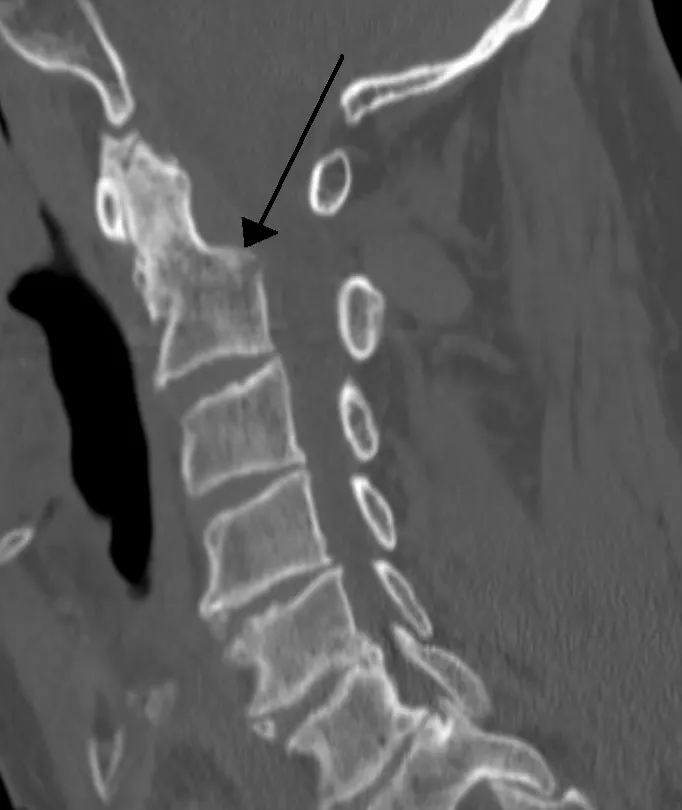

DX.5 — Fracture de l’odontoïde de type II
1. Définition
La Revue médicale suisse du 21 décembre 2005 décrit la fracture de type II à la jonction du processus odontoïde et du corps de C2 (axis).schizas-od
Anderson et d’Alonzo décrivent cette fracture, et la même revue la désigne comme la plus fréquente des types qu’elle retient.schizas-od
Ce trait rompt donc la base de l’odontoïde, au niveau où le processus rejoint le corps de l’axis.schizas-od
Cette lésion reste une fracture du processus odontoïde de C2, et le trait siège à sa jonction avec le corps.schizas-od
La définition retenue est ce siège anatomique, et la revue l’écrit avant de discuter le déplacement ou l’âge.schizas-od
2. Épidémiologie (Suisse, puis Europe)
Les fractures du processus odontoïde de C2 sont plus fréquentes que celles de C1 (atlas), selon la revue du 21 décembre 2005.schizas-c1
Parmi ces fractures de l’odontoïde, le type II est le plus fréquent, et la revue ne publie pas de pourcentage suisse propre.schizas-od
La personne âgée qui chute de façon banale et reçoit le choc sur le crâne doit faire chercher cette fracture.schizas-c1
Le problème clinique pèse surtout chez la personne âgée, car le taux de pseudarthrose y est décrit comme assez élevé.schizas-od
L’incidence des lésions cervicales après traumatisme fermé reste relativement faible, et la revue de 2021 la situe à 40 cas par million et par an aux États-Unis.rms2021-cadre
Cette incidence de 40 cas par million ne mesure pas le type II, et elle compte toutes les lésions cervicales du traumatisme fermé.rms2021-cadre
La prévalence citée va de 0,4 à 0,6 pour cent dans cette population de traumatisme fermé, publiée le 4 août 2021.rms2021-cadre
L’article de 2005 décrit plus de 150 000 lésions rachidiennes par an aux États-Unis, et près de 11 000 traumatismes médullaires.schizas-init
Des chiffres équivalents sont indiqués pour l’ensemble des pays de l’Union européenne, et le fardeau ne se limite pas au continent américain.schizas-init
L’article décrit les lésions thoraco-lombaires parmi les plus fréquentes, ce qui situe le type II hors de cette bande de fréquence.schizas-init
Une femme de 70 ans illustre une pseudarthrose de l’odontoïde dans la revue, et ce cas ne vaut pas une incidence.schizas-od
Aucun taux suisse annuel du seul type II n’est publié dans les textes lus, et ce manque reste sans chiffre de remplacement.
Le sexe et l’âge moyen du type II ne sont pas chiffrés dans les textes lus, et ils ne sont pas remplacés par une moyenne générale.
Depuis 20 ans, la littérature permet de choisir qui immobiliser, et ce délai éclaire le tri plus que la fréquence du type II.rms2021-cadre
| Chiffre | Ce qu’il mesure | Source lue |
|---|---|---|
| 40 cas par million et par an mesurent les lésions cervicales du traumatisme fermé, et non le seul type II.rms2021-cadre | La prévalence de 0,4 à 0,6 pour cent porte sur le même traumatisme fermé, publiée en 2021.rms2021-cadre | La revue de 2005 dit l’odontoïde plus fréquente que C1, sans taux suisse du type II.schizas-c1 |
3. Physiopathologie
La chute banale avec réception sur le crâne amorce la fracture, et elle charge l’odontoïde alors que le crâne s’arrête.schizas-c1
Ce trait s’installe à la jonction du processus et du corps, et la continuité osseuse de la base cède à cet endroit.schizas-od
Un déplacement au-delà de 5 mm écarte les berges, et la revue juge alors l’ostéosynthèse indiquée surtout après 50 ans.schizas-od
Chez la personne âgée, le taux de pseudarthrose est décrit comme assez élevé, ce qui maintient l’instabilité de la base.schizas-od
Une pseudarthrose non traitée peut engendrer un tissu de granulation, et ce tissu peut comprimer les structures neurologiques voisines.schizas-od
Ce tissu inflammatoire régresse après la fixation chirurgicale, et la compression qu’il entretient peut reculer une fois le foyer stable.schizas-od
La fixation postérieure de C1 à C2 limite de façon importante la rotation, et elle solidarise les deux vertèbres qui tournent.schizas-od
Le vissage antérieur de l’odontoïde est l’autre moyen cité, et il vise le foyer sans bloquer d’emblée C1 sur C2.schizas-od
Le diagnostic tardif, fréquent après une chute banale du sujet âgé, laisse parfois la fixation postérieure comme seul recours.schizas-od
Une fracture de C1 s’associe souvent à celle de C2, et le traitement de l’ensemble suit alors celui de C2.schizas-c1
Le ligament transverse est suspecté si l’écart combiné des masses latérales dépasse 7 mm sur le cliché transbuccal.schizas-c1
Cet écart de 7 mm ne définit pas le type II, et il concerne C1 et son ligament, nommés à côté de Jefferson.schizas-c1
Ce burst classique du chapitre thoraco-lombaire rompt le mur postérieur, et ce mécanisme n’est pas celui de la base de l’odontoïde.schizas-tl
Tout traumatisme crânien rend le rachis cervical hautement suspect, donc la chute sur le crâne ne se résume pas au scalp.schizas-init
La chaîne va du choc sur le crâne au trait de la base, puis au déplacement, et au risque de pseudarthrose et de granulation.
Chaque maillon se voit sur l’image ou se corrige par la fixation, et aucun maillon moléculaire chiffré n’est ajouté sans source.
| Perturbation | Exploration qui la montre | Correction liée au mécanisme |
|---|---|---|
| Le trait siège à la jonction du processus et du corps de C2.schizas-od | La coupe montre cette jonction, et elle mesure le déplacement en millimètres.schizas-od | La fixation est discutée au-delà de 5 mm, surtout après 50 ans.schizas-od |
| La pseudarthrose laisse un foyer mobile chez la personne âgée.schizas-od | L’imagerie tardive cherche le tissu de granulation rétrodentaire.schizas-od | La fixation fait régresser ce tissu, comme chez la patiente de 70 ans.schizas-od |
| L’association fréquente de C1 et de C2 charge deux foyers.schizas-c1 | Le cliché transbuccal cherche un écart des masses au-delà de 7 mm.schizas-c1 | Le traitement de l’ensemble suit celui de la fracture de C2.schizas-od |
4. Démarche diagnostique
On écarte d’abord une menace vitale, et une fréquence respiratoire sous 10 ou au-dessus de 30, ou un pouls au-dessus de 120, impose le transport.hug-vit
Tout polytraumatisé est tenu pour porteur d’une fracture instable jusqu’à preuve du contraire, donc le type II ne se cherche pas avant la réanimation.schizas-init
Environ 3 pour cent des lésions d’abord complètes récupèrent pendant les 24 premières heures, et ce chiffre ne décrit pas l’odontoïde isolée.schizas-init
La dissociation occipito-cervicale, plutôt rare et souvent chirurgicale, se cherche avant de conclure à une simple fracture de l’odontoïde.schizas-c1
La fracture déplacée de l’odontoïde chez le sujet âgé figure parmi les indications cervicales de la revue, et elle ne s’observe pas.schizas-ind
Ce type II se distingue du type I, et le type I est une avulsion en général stable, traitée par contention externe.schizas-od
Ce type III siège plus bas, dans le corps vertébral, et la revue le traite le plus souvent par un halo-veste.schizas-od
Ce piège est de classer en type III un trait qui reste à la jonction, et le halo ne remplace pas alors la discussion opératoire.schizas-od
L’isthme de C2 ne fait pas partie des dix diagnostics, et il n’est opéré que si les clichés dynamiques montrent une instabilité.schizas-cx
Les burst et les tear-drop concernent le rachis cervical inférieur, et ils ne portent pas le même siège que la base de l’odontoïde.schizas-cx
Jefferson et le ligament transverse restent hors des dix places, et l’écart de 7 mm les signale sans créer un onzième diagnostic.schizas-c1
La lésion ligamentaire pure est une indication absolue dans la revue, et elle ne se confond pas avec le trait osseux du type II.schizas-ind
Si la règle de 1992 est négative chez un patient éligible, l’imagerie peut être évitée, et l’appliquer hors cadre manquerait un type II.rms2021-regles
Les cinq critères de la Haute Autorité de santé (HAS) doivent être présents ensemble pour juger le risque faible, en novembre 2020.has-nex
Le premier signe qui tranche est le siège du trait sur la coupe, et la clinique de cervicalgie haute ne sépare pas le type II du type III.
| Diagnostic concurrent | Élément qui tranche | Piège | Conduite si le résultat est positif |
|---|---|---|---|
| Le type III siège dans le corps, et non à la jonction.schizas-od | La coupe montre un trait caudal dans le corps vertébral.schizas-od | Croire stable un trait qui reste à la base.schizas-od | La revue propose le plus souvent un halo-veste pour ce type III.schizas-od |
| Le type I est une avulsion en général stable.schizas-od | Le trait arrache l’extrémité, loin de la jonction avec le corps.schizas-od | Le piège est de nommer type II une simple avulsion de l’extrémité.schizas-od | La contention externe suffit en général pour ce type I.schizas-od |
| L’isthme instable de C2 est hors des dix.schizas-cx | Les clichés dynamiques montrent l’instabilité de l’isthme avant toute fixation.schizas-cx | Le piège est d’opérer l’isthme sans un cliché dynamique qui montre l’instabilité.schizas-cx | La chirurgie n’est retenue que si ces clichés montrent l’instabilité.schizas-cx |
| Le ligament transverse se suspecte au-delà de 7 mm.schizas-c1 | Le cliché transbuccal additionne l’écart des masses latérales.schizas-c1 | Le piège est d’utiliser ces 7 mm pour classer la fracture de l’odontoïde.schizas-c1 | La fracture de C1 avec ce ligament figure dans les indications cervicales.schizas-ind |
5. Anamnèse ciblée et drapeaux rouges
Il faut demander l’âge et le mécanisme, et une chute banale sur le crâne chez la personne âgée suffit à suspecter l’odontoïde.schizas-c1
On fait préciser le moment de la chute, car un diagnostic tardif change le choix entre vissage antérieur et fixation postérieure.schizas-od
Il faut chercher une douleur à la palpation de la ligne médiane, et son absence entre dans les 5 critères d’un risque faible.has-nex
On cote la conscience par le score de Glasgow, et la règle exige 15 pour que ce critère soit présent.has-nex
Il faut chercher un déficit neurologique focal, et sa présence retire le critère et impose l’imagerie du rachis cervical.has-nex
On cherche un signe d’intoxication, et la règle de novembre 2020 ne juge pas le risque faible si ce signe existe.has-nex
Il faut chercher une douleur distrayante, par exemple la fracture d’un os long, car elle peut masquer la douleur cervicale.has-nex
On vérifie que le patient a 16 ans ou plus avant d’utiliser la règle canadienne, et elle ne s’applique pas en dessous.has-cc
Il faut noter la pression systolique et la fréquence respiratoire, et la règle exige au moins 90 mmHg et une fréquence de 10 à 24.has-cc
On date le traumatisme, et la règle canadienne vise un traumatisme de la tête ou du cou dans les 48 heures.has-cc
Il faut demander l’âge au-delà de 65 ans, une chute d’au moins 1 m ou de 5 marches, et un choc au-dessus de 100 km/h.has-cc
On demande des paresthésies des extrémités, et elles comptent parmi les critères de risque élevé de la règle canadienne.has-cc
La grossesse fait exclure la règle canadienne, et une femme enceinte cervicalgique n’est pas classée par cet outil.has-cc
La règle canadienne n’est pas validée avant 18 ans ni après 65 ans dans la revue de 2021, ce qui restreint son usage.rms2021-regles
Une fréquence respiratoire inférieure à 10 ou supérieure à 30, ou un pouls supérieur à 120, est une menace vitale immédiate.hug-vit
L’absence de pouls radial ou l’absence de réponse motrice aux ordres impose aussi ce cadre de menace, selon le protocole mis à jour en 2023.hug-vit
Une faiblesse des membres ou une gêne respiratoire après la chute fait craindre une compression, et la granulation ou le déplacement peut la produire.schizas-od
La Haute Autorité de santé, en novembre 2020, dit le risque faible seulement si les 5 critères sont présents ensemble.has-nex
Le premier critère est l’absence de sensibilité de la ligne médiane cervicale postérieure, et sa présence à la palpation impose l’image.has-nex
Le deuxième est une conscience normale avec un score de Glasgow à 15, et un score plus bas sort le patient de la règle.has-nex
Le troisième est l’absence de déficit neurologique focal, et un déficit focal fait demander l’imagerie sans attendre.has-nex
Le quatrième est l’absence de signe d’intoxication, et une intoxication rend le examen clinique insuffisant pour écarter la lésion.has-nex
Le cinquième est l’absence de douleur distrayante, et la fracture d’un os long est l’exemple écrit par la Haute Autorité de santé.has-nex
La règle vise le patient stable vu aux urgences pour un traumatisme non pénétrant, et elle ne s’applique pas au traumatisme pénétrant.has-nex
Elle ne s’applique pas non plus au patient instable, et la réanimation passe avant ce tri clinique.has-nex
L'article de 2021 indique une sensibilité proche de 99 pour cent, et l’étude princeps portait sur 34 069 patients.rms2021-cadrerms2021-regles
Ces patients avaient de 1 à 101 ans dans 21 centres, et la règle aurait évité une imagerie chez 12,6 pour cent d’entre eux.rms2021-regles
FermerLa règle concerne les patients à partir de 16 ans, avec un score de Glasgow à 15 et un traumatisme daté de moins de 48 heures.has-cc
La pression systolique doit atteindre au moins 90 mmHg, et la fréquence respiratoire doit rester entre 10 et 24.has-cc
Un âge d’au moins 65 ans est un critère de risque élevé, et il indique un bilan radiographique.has-cc
Une chute d’au moins 1 m ou d’au moins 5 marches est aussi un mécanisme à risque, de même qu’un choc axial sur la tête.has-cc
Un accident de la voie publique au-dessus de 100 km/h, un tonneau, une éjection ou une collision à vélo indiquent l’imagerie.has-cc
Des paresthésies des extrémités comptent comme critère de risque élevé, et elles ne se rassurent pas par la rotation de la tête.has-cc
Sans critère élevé, un critère de risque faible autorise de tester la rotation active à 45 degrés des deux côtés.has-cc
Si le patient tourne la tête à 45 degrés sans douleur, la fiche de 2020 permet de se passer du bilan radiographique.has-cc
La revue de 2021 ajoute que cette règle n’est pas validée sous 18 ans ni au-dessus de 65 ans, et qu’elle est plus difficile à apprendre.rms2021-regles
Elle aurait réduit le besoin d’imagerie chez 40 pour cent du collectif étudié, ce qui ne l’étend pas hors de ses critères.rms2021-regles
La grossesse, le retour pour la même lésion et une pathologie cervicale déjà connue excluent la règle, et un autre chemin est choisi.has-cc
Fermer| Drapeau | Signification | Action immédiate |
|---|---|---|
| La fréquence respiratoire est sous 10 ou au-dessus de 30, ou le pouls dépasse 120.hug-vit | Ces seuils définissent une menace vitale immédiate dans le protocole de 2023.hug-vit | On stabilise au minimum et on transporte, sans retarder un geste qui sauve.hug-vit |
| La personne âgée a chuté sur le crâne, même de façon banale.schizas-c1 | La revue dit que cette chute doit faire suspecter l’odontoïde.schizas-c1 | On image la jonction, et on mesure un déplacement au-delà de 5 mm.schizas-od |
| Un déficit focal, une intoxication ou une douleur d’os long est présent.has-nex | Un des 5 critères manque, et le risque n’est pas jugé faible.has-nex | On demande l’imagerie du rachis cervical chez ce patient stable et non pénétrant.has-nex |
| L’âge atteint 65 ans, ou la chute atteint 1 m, ou la vitesse dépasse 100 km/h.has-cc | Ce sont des critères de risque élevé de la règle canadienne de 2020.has-cc | On indique le bilan radiographique sans exiger la rotation à 45 degrés.has-cc |
6. Examen physique ciblé, région par région
L’examen commence par les voies aériennes et la respiration, puis il descend vers la nuque, les membres et la marche possible.
Le maintien manuel de la tête devrait être systématique lors de l’intubation, car l’oxygénation prime sur la position selon le protocole.hug-vit
La minerve rigide reste la règle chez le patient intubé, afin de garder l’axe de la tête, du cou et du tronc.hug-vit
Chez le patient conscient qui ne doit pas être intubé, une autre stabilisation est préférée, et la minerve rigide a des complications écrites.hug-log
On inspecte le cuir chevelu et on demande le point d’impact, et la réception sur le crâne oriente vers l’odontoïde chez la personne âgée.schizas-c1
Un traumatisme crânien rend le rachis cervical hautement suspect, et l’examen de la tête ne s’arrête pas à la plaie.schizas-init
On compte la fréquence respiratoire et le pouls avant de mobiliser, et un seuil de 10, de 30 ou de 120 change la priorité.hug-vit
Il faut regarder la déglutition et la voix, et une gêne haute peut accompagner une lésion de la jonction cranio-cervicale.
On ne fait pas tourner la tête pour « tester » une odontoïde déjà suspecte, et la dissociation, bien que rare, reste chirurgicale.schizas-c1
L'état normal est une nuque qui tourne sans douleur chez un patient éligible au test, et le pathologique est la douleur ou le refus.
FermerOn palpe la ligne médiane cervicale postérieure de haut en bas, et la sensibilité de cette ligne retire un critère de risque faible.has-nex
Un log-roll de 20 à 30 degrés suffit pour palper et regarder le dos, et le log-roll complet est inutile.hug-log
Le log-roll complet fait mal et bouge le foyer, et on l’évite quand une fracture de la base est déjà possible.hug-log
Il faut chercher un hématome, une plaie ou une marche d’épineuses, et l’absence de marche n’écarte pas un trait de la base.
La minerve laisse encore environ 30 à 50 degrés de mouvement, et elle ne remplace pas le maintien manuel en ligne.rms2021-min
Le maintien manuel réduit le mouvement à 10 à 15 degrés, ce qui rejoint les blocs de tête chez le volontaire sain.rms2021-min
FermerOn compare la force des quatre membres et on cherche un déficit focal, et ce déficit retire le critère de conscience clinique rassurante.has-nex
Une compression par le tissu de granulation peut donner un signe neurologique, et un déficit même discret ne se range pas en cervicalgie simple.schizas-od
Des paresthésies des extrémités sont un critère de risque élevé dans la règle canadienne, et elles imposent le bilan radiographique.has-cc
On teste la sensibilité au toucher et à la piqûre sans chiffre inventé, et les textes lus ne donnent pas de seuil de dermatomes pour le type II.
L'état normal est une force symétrique sans paresthésie, et le pathologique est toute asymétrie apparue après la chute.
FermerIl faut vérifier que le score de Glasgow est à 15 avant d’appliquer un tri sans image, et un score moindre sort des deux règles lues.has-nex
L’absence de réponse motrice aux ordres est une menace vitale dans le protocole, et elle précède la discussion du trait osseux.hug-vit
La minerve peut limiter la respiration et favoriser une bronchoaspiration, ce qui justifie de ne pas la poser par réflexe chez le conscient.hug-log
Elle peut aussi agiter le patient désorienté, ulcérer l’occiput, aggraver une spondylarthrite ankylosante et augmenter la pression intracrânienne (PIC).hug-log
Il faut ausculter les deux champs pulmonaires après la stabilisation, et une fréquence anormale se confirme avant le transport.
Fermer7. Approche syndromique
Le premier syndrome est la cervicalgie haute après une chute sur le crâne, sans déficit, et il fait chercher le trait de la base.
Ce syndrome est typique chez la personne âgée, et la revue lie la chute banale sur le crâne à la fracture de l’odontoïde.schizas-c1
Le deuxième syndrome est le déficit neurologique d’apparition secondaire, et il fait chercher une compression par déplacement ou par granulation.
La granulation d’une pseudarthrose peut comprimer, et ce syndrome ne se rassure pas par l’ancienneté de la chute.schizas-od
Le troisième syndrome est l’association douloureuse haute avec une fracture de l’atlas, et le traitement suit alors la fracture de l’axis.
L’article dit cette association fréquente, et il conditionne la conduite à la fracture de C2 plutôt qu’à celle de C1.schizas-od
Le quatrième syndrome est la menace vitale qui masque la lésion osseuse, et la réanimation passe avant le classement du trait.
Le protocole impose en règle générale d’immobiliser une lésion médullaire possible sur traumatisme fermé, sans retarder un geste salvateur.hug-log
Dans la cervicalgie haute isolée, le patient désigne la nuque haute et n’a pas de déficit, ce qui n’écarte pas le trait.
Dans le syndrome tardif, la douleur dure et un signe neurologique apparaît, car le tissu de granulation peut comprimer après la pseudarthrose.schizas-od
Dans l’association C1 et C2, la douleur est haute et le cliché transbuccal devient utile, afin de ne pas manquer l’écart ligamentaire.schizas-c1
Dans la menace vitale, la respiration ou le pouls dépasse les seuils écrits, et l’intubation avec maintien manuel reste le premier geste.hug-vit
Chaque syndrome se recherche dans l’ordre où il menace, et le classement d’Anderson vient seulement après la sécurité vitale.
Fermer| Syndrome | Signes fonctionnels | Signes physiques |
|---|---|---|
| La cervicalgie haute après chute sur le crâne domine, sans irradiation obligatoire des membres. | La personne âgée décrit une chute banale avec réception sur le crâne.schizas-c1 | La ligne médiane peut être sensible, et le score de Glasgow reste à coter.has-nex |
| La douleur persiste et un trouble neurologique apparaît à distance de la chute.schizas-od | Le patient rapporte une gêne qui s’installe, parfois après un diagnostic tardif.schizas-od | Un déficit discret accompagne la granulation d’une pseudarthrose non fixée.schizas-od |
| La douleur haute s’associe à une autre fracture du même choc.schizas-od | Le patient peut décrire le même traumatisme pour C1 et pour C2.schizas-c1 | L’écart des masses latérales se mesure, et le traitement suit C2.schizas-c1 |
8. Diagnostic positif et critères
Le diagnostic positif du type II repose sur un trait à la jonction du processus odontoïde et du corps, tel que la revue le définit.schizas-od
Ce siège suffit à nommer le type II, et le déplacement au-delà de 5 mm ne change pas le nom, il change la discussion opératoire.schizas-od
Un déplacement au-delà de 5 mm, surtout après 50 ans, indique un traitement chirurgical selon la revue du 21 décembre 2005.schizas-od
En dessous de ce déplacement, la revue ne donne pas un second seuil chiffré, et la leçon n’en crée pas pour le sujet plus jeune.schizas-od
Ce type I et le type III sont des exclusions de siège, et l’un est une avulsion et l’autre un trait du corps.schizas-od
L’isthme instable ne valide pas ce diagnostic, et il se juge sur des clichés dynamiques et il reste hors des dix.schizas-cx
L’écart de 7 mm valide une suspicion de ligament transverse, et il ne classe pas à lui seul la fracture de l’odontoïde.schizas-c1
La clinique de cervicalgie sans image ne suffit pas, et plusieurs lésions hautes partagent la même douleur après la chute.
La patiente de 70 ans de la revue avait une pseudarthrose déjà constituée, et l’image tardive peut montrer la granulation plutôt que le trait frais.schizas-od
| Critère | Suffisant | Insuffisant |
|---|---|---|
| Le trait est à la jonction du processus et du corps de C2.schizas-od | Ce siège nomme le type II, comme Anderson et d’Alonzo le font reprendre par la revue.schizas-od | Une cervicalgie sans coupe ne nomme pas le type.schizas-od |
| Le déplacement dépasse 5 mm, surtout après 50 ans.schizas-od | La revue indique alors la chirurgie, par fixation postérieure ou par vissage antérieur.schizas-od | Ce seuil ne renomme pas un trait de type III situé dans le corps.schizas-od |
| L’écart des masses dépasse 7 mm sur le cliché transbuccal.schizas-c1 | Ce seuil suspecte le ligament transverse, à côté de Jefferson, sans onzième diagnostic.schizas-c1 | Il ne mesure pas le déplacement de l’odontoïde de type II.schizas-od |
9. Examens complémentaires
L’imagerie par résonance magnétique (IRM) reste utile pour les lésions neurologiques ou ligamentaires, et elle ne remplace pas la coupe osseuse du trait.schizas-init
La tomodensitométrie (TDM) du rachis cervical montre la jonction de l’odontoïde, et c’est l’examen qui situe le trait de type II.
La radiographie transbuccale sert à l’écart des masses latérales, et le seuil de 7 mm y est écrit pour le ligament transverse.schizas-c1
Si les 5 critères sont présents chez un patient stable au traumatisme non pénétrant, la Haute Autorité de santé n’exige pas de bilan radiographique.has-nex
La règle canadienne envoie au bilan que un critère de risque élevé est présent, ou que la rotation à 45 degrés est impossible ou douloureuse.has-cc
Il faut mesurer le déplacement en millimètres sur la coupe, et le seuil opératoire écrit est de 5 mm, surtout après 50 ans.schizas-od
Dans la vignette de la revue, un scanner est demandé pour une cervicalgie haute, et la minerve de contention vient après la lésion prouvée.rms2021-min

James Heilman publie cette coupe sous licence Creative Commons, et sa flèche désigne la base de l’odontoïde qu’il décrit comme fracturée.image-dens
Ce fichier est consulté le 15 novembre 2026, et la licence Attribution-Share Alike 3.0 couvre cette copie non modifiée.image-dens
La flèche de l’auteur indique la base, et le lecteur cherche le trait à la jonction du processus et du corps, siège du type II.image-dens
Cette image ne donne pas un déplacement en millimètres, et aucun chiffre de déplacement n’est inscrit sur le fichier consulté.schizas-od
On ne conclut pas au seuil de 5 mm à partir de cette seule flèche, et la mesure reste celle de la coupe du patient.schizas-od
L'état normal serait une corticale continue de la base, et le pathologique est l’interruption que l’auteur signale par sa flèche.
Ce piège est de prendre la flèche pour une mesure, ou de croire que ce cliché est une radiographie de profil standard.
L’image décide d’apprendre le siège, et la conduite opératoire dépend encore du déplacement et de l’âge lus sur le dossier.
FermerL’IRM se demande si un déficit ou une lésion ligamentaire est en jeu, et la revue la réserve à ce cadre.schizas-init
Chez la patiente de 70 ans, les coupes avant et après fixation montrent la régression du tissu inflammatoire rétrodentaire.schizas-od
Cette régression enseigne que la granulation peut être la cible visible, et l’IRM tardive ne sert pas seulement à revoir l’os.schizas-od
Avant une réduction de luxation, l’IRM préopératoire est discutée, et cette discussion ne se transporte pas telle quelle au vissage de l’odontoïde.schizas-cx
Si l’IRM est impossible, la coupe osseuse reste le moyen de nommer le type II, et le déficit clinique guide l’urgence.
Fermer| Résultat | Signification | Conduite |
|---|---|---|
| La coupe montre un trait à la jonction du processus et du corps.schizas-od | Le type II est nommé, quel que soit le déplacement mesuré ensuite.schizas-od | On mesure les millimètres, et on discute la chirurgie au-delà de 5 mm après 50 ans.schizas-od |
| Le cliché transbuccal montre un écart des masses au-delà de 7 mm.schizas-c1 | Le ligament transverse est suspecté, à côté de la fracture de Jefferson.schizas-c1 | Cette association figure dans les indications cervicales de la revue de 2005.schizas-ind |
| Les 5 critères rassurants sont tous présents chez un patient stable.has-nex | Le risque de lésion cervicale est jugé faible par la fiche de novembre 2020.has-nex | Le bilan radiographique n’est pas nécessaire dans ce cadre précis.has-nex |
| La flèche du fichier désigne la base de l’odontoïde sur une coupe sagittale.image-dens | L’auteur décrit une fracture de cette base, sans chiffre de déplacement sur l’image.image-dens | On apprend le siège du type II, et on mesure le patient à part.schizas-od |
Qui regarde ouvre d’abord la coupe sagittale médiane, et elle montre la jonction du processus odontoïde et du corps.
Il doit suivre la corticale antérieure, puis la corticale postérieure, avant de dire où le trait se trouve.
Un trait qui reste à la base est un type II, et un trait qui descend dans le corps est un type III.schizas-od
La coupe coronale complète la sagittale, et elle montre si le foyer est déjeté vers un seul côté.
Ce déplacement se mesure entre les berges, et la revue indique la chirurgie au-delà de 5 mm surtout après 50 ans.schizas-od
On ne copie pas cette mesure depuis le cliché d’enseignement, et ce fichier ne porte aucun millimètre inscrit.image-dens
Le cliché transbuccal ne mesure pas l’odontoïde, et il est prévu pour l’écart de 7 mm des masses de C1.schizas-c1
Si C1 et C2 sont fracturées ensemble, le plan reste celui de C2, et la revue conditionne l’association à cette fracture.schizas-od
L’IRM s’ajoute quand un déficit est présent, et la revue la décrit pour les lésions neurologiques ou ligamentaires.schizas-init
La granulation tardive est derrière l’odontoïde, et elle régresse après la fixation chez la patiente de 70 ans.schizas-od
On dicte le siège, le déplacement et l’âge dans le même compte rendu, afin que la décision ne sépare pas ces trois faits.
Il faut comparer le trait frais à une pseudarthrose ancienne, et le foyer déjà mou demande souvent la voie postérieure.
Le diagnostic tardif est fréquent après une chute banale, et la fixation postérieure est alors parfois le seul recours décrit.schizas-od
Le radiologue doit dire si le foramen transversaire est intact, et une atteinte vasculaire changerait le bilan sans dose inventée ici.
Une coupe qui ne passe pas par la base ne doit pas rassurer, et le type II se juge précisément à cette jonction.
Il faut regarder d’abord l’os sain au-dessus et au-dessous, et le normal se décrit avant le trait.
L'état pathologique est l’interruption à la jonction, et ce siège est celui que la revue nomme type II.schizas-od
Il faut chercher ensuite un deuxième trait sur l’atlas, et l’association des deux fractures est dite fréquente.
Si les masses latérales s’écartent, le chiffre de 7 mm se lit sur le cliché transbuccal et non sur cette seule coupe sagittale.schizas-c1
Ce compte rendu doit contenir les millimètres et l’âge, et le seuil de 5 mm après 50 ans ouvre la discussion opératoire.schizas-od
On n’écrit pas un pourcentage de canal pour cette fracture, et ce langage appartient à un autre chapitre de la même revue.
Fermer10. Arbre décisionnel
que la fréquence respiratoire est sous 10 ou au-dessus de 30, ou que le pouls dépasse 120, on transporte après le geste qui sauve.hug-vit
Si le patient doit être intubé, le maintien manuel de la tête est systématique et la minerve rigide reste la règle.hug-vit
Si le patient est stable, non pénétrant, et que les 5 critères sont présents, la fiche de 2020 n’exige pas de radiographie.has-nex
Si un critère de risque élevé est présent, on image, et la rotation à 45 degrés ne sert plus à écarter la lésion.has-cc
Si la coupe montre un trait à la jonction, on nomme le type II et on mesure le déplacement.schizas-od
Si ce déplacement dépasse 5 mm, surtout après 50 ans, la revue indique la chirurgie, par voie postérieure ou par vissage antérieur.schizas-od
Si le diagnostic est tardif chez le sujet âgé, la fixation postérieure est parfois le seul recours cité.schizas-od
Si le trait est dans le corps, on parle de type III, et le halo-veste est le traitement le plus souvent retenu.schizas-od
Si l’écart des masses dépasse 7 mm, on suspecte le ligament transverse, sans faire de ce ligament un diagnostic du dix.schizas-c1
Si l’on pense à l’isthme, on ne l’opère que que les clichés dynamiques montrent une instabilité.schizas-cx
Si le déficit neurologique progresse avec une compression, l’indication chirurgicale est absolue dans la revue, avant le détail du trait.schizas-ind
Si la lésion neurologique est incomplète, une chirurgie dans les 24 heures n’apporte qu’un bénéfice modeste, et elle n’est pas une obligation chiffrée pour toute odontoïde.schizas-time
Si aucune de ces branches n’est présente, on ne fabrique pas une durée de corset, et la revue ne l’écrit pas pour le type II peu déplacé.
On lit l’arbre de haut en bas, et la menace vitale précède le nom de la fracture et le choix de l’implant.
La branche opératoire du type II s’ouvre au-delà de 5 mm, surtout après 50 ans, et elle offre deux techniques citées.schizas-od
La branche du diagnostic tardif ferme souvent le vissage, et la revue dit la fixation postérieure parfois seule possible.schizas-od
La branche de C1 ne crée pas un autre plan, et le traitement de l’association suit celui de C2.schizas-c1
La branche des pourcentages de canal appartient au chapitre thoraco-lombaire, et elle ne se greffe pas sur l’odontoïde.schizas-tl
Fermer11. Prise en charge
11.A But
Ce but est une base stable, sans compression neurologique, et la pseudarthrose du sujet âgé peut entretenir un tissu qui comprime.schizas-od
Quand le déplacement dépasse 5 mm, surtout après 50 ans, le but inclut la fixation, selon la revue du 21 décembre 2005.schizas-od
Ce but n’est pas de garder la rotation si la fixation postérieure est choisie, et cette fixation limite la rotation de façon importante.schizas-od
11.B Moyens
D’abord on traite la menace vitale, et l’immobilisation ne retarde pas un geste salvateur, selon le protocole entré en vigueur le 15 mars 2021.hug-vit
Ensuite on choisit la stabilisation, et le maintien manuel limite mieux le mouvement que la minerve, qui laisse 30 à 50 degrés.rms2021-min
Le canton de Neuchâtel a abandonné la minerve rigide avant l’imagerie dès 2020, et la revue de 2021 rapporte ce changement.rms2021-min
La chirurgie, lorsqu’elle est indiquée, est une fixation postérieure de C1 sur C2 ou un vissage antérieur de l’odontoïde.schizas-od
On explique la perte de rotation lorsque la voie postérieure est retenue, avant le choix de l’implant.schizas-od
Les corticoïdes à haute dose sont hors information professionnelle (AIPS) dans cette leçon, et la revue n’écrit aucun milligramme et penche vers les effets néfastes.schizas-ster
Elle ne les discute que dans les huit premières heures, et l’évidence qu’elle résume favorise les effets néfastes plutôt que le bénéfice.schizas-ster
La douleur se traite avec les molécules dont l’information professionnelle (AIPS) a été lue, et aucune dose n’est recopiée hors de ces textes.
À la première minute, on ouvre les voies aériennes et on compte la respiration et le pouls, et les seuils de 10, de 30 et de 120 décident.hug-vit
Si l’intubation est nécessaire, le maintien manuel de la tête est systématique et la minerve rigide s’applique chez le patient intubé.hug-vit
Ce transfert se fait avec une civière à aube, et le log-roll reste partiel, entre 20 et 30 degrés, pour voir le dos.hug-log
Dès que le patient est stable, on cote les 5 critères, et on n’image pas si tous sont présents dans le cadre de 2020.has-nex
Quand la coupe nomme le type II, on mesure le déplacement et l’on confronte le chiffre de 5 mm à l’âge de 50 ans.schizas-od
Un déficit qui progresse avec compression n’attend pas cette mesure, et la revue en fait une indication absolue.schizas-ind
FermerL’information professionnelle du paracétamol, numéro 58530, mise à jour en juillet 2026, indique les douleurs post-traumatiques parmi ses emplois.aips-58530
L’information professionnelle fixe le plafond ainsi : « La dose quotidienne maximale de 4000 mg de paracétamol ne doit pas être dépassée. »aips-58530
Au-dessus de 40 kg, la prise va de 500 à 1000 mg, et l’intervalle chez l’adulte va de 4 à 8 heures.aips-58530
Si la clairance est de 10 à 50 ml/min, l’intervalle passe à 6 heures et le plafond journalier à 3000 mg.aips-58530
Si la clairance est inférieure à 10 ml/min, l’intervalle passe à 8 heures et le plafond journalier à 2000 mg.aips-58530
L’hypersensibilité, les troubles hépatiques graves et la maladie de Gilbert sont des contre-indications écrites, et elles arrêtent cette molécule.aips-58530
| Rubrique | Texte lu |
|---|---|
| Grossesse | En cas de nécessité clinique, le paracétamol peut être pris pendant la grossesse, à la dose efficace la plus faible et pendant la durée la plus courte possible.aips-58530 |
| Allaitement | La prudence est de mise lors de l’utilisation du Dafalgan pendant l’allaitement.aips-58530 |
On annonce au patient le plafond de 4000 mg et l’intervalle de 4 à 8 heures, et dépasser ce cadre sort du texte lu.aips-58530
FermerLa morphine, numéro 53571, mise à jour en février 2024, vise une douleur aiguë forte quand l’antalgique non opioïde ne suffit pas.aips-53571
Pour la douleur aiguë sous-cutanée, le texte écrit « 10 mg par 70 kg de poids corporel toutes les 4 – 6 heures ».aips-53571
Les variations individuelles vont de 5 à 20 mg, et la voie intraveineuse citée est de 2,5 mg toutes les 5 minutes jusqu’au contrôle.aips-53571
Le traumatisme crânien et l’hypertension intracrânienne sont des contre-indications, et la morphine ne précède pas l’évaluation du crâne.aips-53571
La dépression respiratoire, l’iléus paralytique et l’insuffisance hépatique ou rénale sévère contre-indiquent aussi cette ampoule.aips-53571
| Rubrique | Texte lu |
|---|---|
| Grossesse | La morphine ne doit pas être administrée pendant la grossesse, sauf en cas de nécessité absolue.aips-53571 |
| Allaitement | Il est absolument contre-indiqué d’allaiter pendant ce traitement.aips-53571 |
Chez le nouveau-né ventilé, la fiche écrit 10 µg par kg et par heure, et elle interdit de dépasser 15 µg par kg et par heure.aips-53571
Fermer11.C Surveillance
Il faut surveiller la force et la sensibilité après la fixation, car la granulation doit régresser et un déficit nouveau remet la compression en question.schizas-od
On surveille la rotation restante lorsque la voie postérieure a été choisie, pour confirmer la limitation décrite comme importante.schizas-od
Sous morphine, on surveille la respiration, car la dépression respiratoire est une contre-indication et un effet à reconnaître tout de suite.aips-53571
Pour une lésion incomplète, la revue ne promet qu’un bénéfice modeste à la chirurgie des 24 heures, donc le suivi ne se juge pas là-dessus.schizas-time
Il faut retirer la minerve d’attente dès que la lésion est classée, et son utilité avant l’image est discutable dans la revue de 2021.rms2021-min
11.D Pronostic
Ce pronostic osseux du sujet âgé est grevé par une pseudarthrose assez élevée, et la revue ne donne pas de pourcentage à recopier.schizas-od
Une pseudarthrose non opérée peut comprimer par sa granulation, et cette granulation régresse après la fixation, comme chez la femme de 70 ans.schizas-od
Après fixation postérieure, la rotation reste limitée, et la guérison osseuse ne rend pas la mobilité d’avant la chirurgie.schizas-od
Une lésion médullaire encore complète après les 24 premières heures est de mauvais pronostic dans la revue, et ce fait ne se transpose pas à l’odontoïde sans déficit.schizas-init
La sortie suppose une voie aérienne sûre, un déficit stable ou absent, un plan de fixation ou de surveillance écrit, et une douleur couverte par une fiche lue.
La chirurgie en urgence d’un déficit établi non progressif reste une option, et la revue ne la rend ni obligatoire ni contre-indiquée.schizas-time
L'opérateur explique les deux techniques avant le choix, et la voie postérieure et le vissage antérieur n’ont pas le même prix fonctionnel.
La fixation postérieure solidarise C1 et C2, et la revue décrit une limitation importante de la rotation comme désavantage.schizas-od
Le vissage antérieur vise le foyer de la base, et il reste possible surtout quand le diagnostic n’est pas tardif.schizas-od
Chez le sujet âgé vu tard, la voie postérieure est parfois la seule que la revue retient, et on le dit clairement.schizas-od
On montre au patient ce qu’il ne pourra plus faire en rotation, afin que le consentement porte sur cette limite réelle.
La douleur légère ou modérée relève d’abord du paracétamol, et la fiche lue indique les douleurs post-traumatiques.aips-58530
La morphine ne vient qu’ensuite, que la douleur reste forte et que le crâne n’est pas une contre-indication écrite.aips-53571
Il faut préparer la naloxone et l’assistance respiratoire avant l’injection, et la fiche exige ces moyens à portée de main.aips-53571
On écrit l’heure de chaque prise, afin de respecter l’intervalle lu et de ne pas additionner deux sources de paracétamol.
On n’ajoute pas un corticoïde « pour protéger la moelle », et la revue penche vers les effets néfastes et n’écrit pas de dose.schizas-ster
La minerve rigide est pour le patient intubé, et le patient conscient reçoit une autre stabilisation quand le protocole le permet.hug-vit
Neuchâtel a quitté la minerve rigide avant l’image en 2020, et ce choix illustre une prévention du mal fait par l’outil.rms2021-min
La famille apprend que la chute banale suffit comme mécanisme, afin qu’elle ne minimise pas un choc sur le crâne.
Ce retour à domicile exige un aidant la première nuit si la personne est âgée, et une nouvelle chute rechargerait le foyer.
On revoit la force des membres à la sortie, et une granulation ou un déplacement peut encore comprimer.schizas-od
Ce compte rendu de sortie nomme le type, le déplacement, la technique choisie et la limitation de rotation attendue.
On dit d’abord le nom du trait, et le patient doit savoir que la fracture est à la base de l’odontoïde et non dans le corps.schizas-od
On dit ensuite le seuil, et au-delà de 5 mm, surtout après 50 ans, la revue indique une opération.schizas-od
On décrit la voie postérieure comme un blocage de C1 sur C2, et l’on précise que la rotation en sera nettement limitée.schizas-od
On décrit le vissage antérieur comme une vis dans le foyer, possible quand le diagnostic n’a pas trop tardé.schizas-od
On parle de la granulation si la douleur est ancienne, et ce tissu peut comprimer et il régresse après la fixation.schizas-od
On dit si l’atlas est aussi fracturé, et le traitement de cette association suit celui de l’axis.schizas-c1
On remet le plafond du paracétamol par écrit, et le patient peut déjà en prendre dans un autre médicament.aips-58530
Il faut expliquer pourquoi la morphine est refusée si la tête est blessée, et cette contre-indication protège la vigilance.aips-53571
On laisse un numéro d’appel lorsqu’un déficit apparaît, sans attendre le rendez-vous.
Il faut vérifier que la personne a compris la perte de rotation, et ce désavantage est celui que la revue met en avant.
FermerCe suivi osseux cherche la continuité du foyer, et un foyer encore mobile chez le sujet âgé reste une pseudarthrose à discuter.
La régression du tissu rétrodentaire est un signe favorable après la fixation, comme la revue le montre chez la femme de 70 ans.schizas-od
On ne promet pas le retour de toute la rotation après une fixation postérieure, et la revue décrit cette limite comme importante.
Il faut rappeler d’éviter le retournement complet au lit, car un log-roll de 20 à 30 degrés suffit et le tour complet fait mal.hug-log
On retire les blocs et la minerve d’attente dès que le plan est fixé, et leur rôle était de limiter le mouvement avant la décision.rms2021-min
La reprise de la marche se fait avec aide si la personne est âgée, afin qu’une nouvelle chute ne recharge pas la base.
Un déficit complet qui dure au-delà des 24 premières heures est de mauvais pronostic dans la revue, et cela concerne la moelle.schizas-init
Ce dossier doit porter au médecin traitant le type, les millimètres, l’âge et la technique, afin que le suivi ne reparte pas de zéro.
On note qui était présent lors de l’explication, et le consentement sur la perte de rotation doit être retrouvé dans le dossier.
Il faut répéter que le halo-veste est le traitement le plus souvent écrit pour le type III, afin de ne pas l’appliquer d’habitude au type II déplacé.schizas-od
On rappelle que l’isthme n’entre pas dans ce plan, et il exige des clichés dynamiques et il reste hors des dix diagnostics.schizas-cx
Il faut placer le déficit progressif avec compression au-dessus du seuil millimétrique, et la revue en fait une indication absolue.schizas-ind
On vérifie l’occiput et la respiration après toute minerve, et le protocole liste l’ulcère, l’agitation et la gêne respiratoire.hug-log
Il faut comparer le maintien manuel, qui laisse 10 à 15 degrés, à la minerve, qui en laisse 30 à 50, avant de choisir l’outil préhospitalier.rms2021-min
On transmet ces choix à l’équipe de nuit, afin que la stabilisation ne change pas sans une nouvelle évaluation.
Ce patient reçoit un écrit simple du type de fracture, du seuil qui a décidé, et du rendez-vous de contrôle.
12. Prévention
La prévention secondaire commence par reconnaître la chute banale de la personne âgée, et c’est le mécanisme que la revue lie à l’odontoïde.schizas-c1
Depuis 20 ans, on sélectionne qui immobiliser, afin d’éviter la minerve chez celui qui n’en tire pas un bénéfice démontré.rms2021-cadre
Il n’existe pas d’étude randomisée lue ici qui démontre un effet de la minerve sur la mortalité, et on ne promet pas cet effet.rms2021-min
Il faut éviter le log-roll complet, et il bouge le foyer, et un angle de 20 à 30 degrés suffit à l’inspection.hug-log
On n’immobilise pas un traumatisme pénétrant isolé sans déficit, et le protocole l’écrit, et cette règle ne se confond pas avec la chute sur le crâne.hug-log
Aucune recommandation chiffrée d’un office de prévention des chutes n’a été lue pour ce diagnostic, et aucun seuil de prévention primaire n’est inventé.
La prévention tertiaire explique la perte de rotation après la fixation postérieure, afin que le patient adapte ses gestes sans croire à une complication neuve.rms2021-min
On ne prévient pas la lésion médullaire par une dose de corticoïde absente du texte, et la revue penche vers les effets néfastes.schizas-ster
13. Points clés
Ce type II est le trait à la jonction du processus odontoïde et du corps de C2, et la revue le dit le plus fréquent.schizas-od
Au-delà de 5 mm de déplacement, surtout après 50 ans, la revue indique la chirurgie, par fixation postérieure ou par vissage antérieur.schizas-od
Une chute banale sur le crâne chez la personne âgée doit faire chercher cette fracture, et l’association avec C1 suit le traitement de C2.schizas-c1
L’écart de 7 mm suspecte le ligament transverse et ne crée pas un onzième diagnostic, tandis que l’isthme reste hors des dix.schizas-c1
Aucun milligramme de corticoïde n’est recopié, et la revue n’en écrit pas et juge les effets néfastes plus probables que le bénéfice.schizas-ster
14. Pièges et questions fréquentes
Pourquoi opère-t-on souvent le type II du sujet âgé au-delà de 5 mm, alors qu’un type III reçoit le plus souvent un halo-veste ?schizas-od
et le type II est à la jonction et fait plus de pseudarthroses chez la personne âgée, tandis que le type III est dans le corps.schizas-od
Pourquoi ne pas appliquer au cou les seuils de 20 degrés, de 50 pour cent et de 66 pour cent lus dans la même revue ?schizas-tl
et ces seuils sont écrits dans le chapitre thoraco-lombaire du burst, et le chapitre de l’odontoïde donne 5 mm et 50 ans.schizas-tlschizas-od
Un écart de 7 mm sur le cliché transbuccal classe-t-il l’odontoïde, ou désigne-t-il autre chose ?schizas-c1
Il suspecte le ligament transverse de C1, à côté de Jefferson, et la revue ne lui donne pas une onzième place dans les dix.schizas-c1
Faut-il opérer l’isthme de C2 dès qu’on le voit, au même titre qu’une odontoïde déplacée du sujet âgé ?schizas-cx
Non, et l’isthme n’est opéré que si les clichés dynamiques montrent une instabilité, et il reste hors des dix diagnostics.schizas-cx
Pourquoi la morphine est-elle en retrait quand le crâne est aussi blessé, malgré une douleur forte de la nuque ?aips-53571
et le traumatisme crânien et l’hypertension intracrânienne sont des contre-indications écrites de la fiche mise à jour en février 2024.aips-53571
Peut-on citer une dose de corticoïde dans les huit premières heures pour protéger la moelle ?schizas-ster
Non, et la revue n’écrit aucun milligramme, limite la discussion aux huit premières heures et penche vers les effets néfastes.schizas-ster
Un patient calme, à 15 de Glasgow, sans douleur médiane ni déficit, sans intoxication ni douleur d’os long, doit-il être radiographié ?has-nex
Non dans le cadre de novembre 2020, que ces 5 critères sont présents, s’il est stable et que le traumatisme n’est pas pénétrant.has-nex
La minerve posée avant toute image protège-t-elle mieux que les mains et les blocs ?rms2021-min
L'article décrit 30 à 50 degrés encore possibles avec la minerve, contre 10 à 15 degrés avec le maintien manuel.rms2021-min
| Question | Réponse | Raison |
|---|---|---|
| Le type II au-delà de 5 mm après 50 ans relève-t-il d’une discussion opératoire ?schizas-od | Oui, la revue indique alors la chirurgie, par voie postérieure ou par vissage antérieur.schizas-od | Le taux de pseudarthrose est décrit comme assez élevé chez la personne âgée.schizas-od |
| Le rétrécissement de 66 pour cent impose-t-il une voie antérieure pour l’odontoïde ?schizas-tl | Non, ce seuil est celui du burst thoraco-lombaire dans la même revue.schizas-tl | L’odontoïde se décide avec 5 mm et 50 ans, pas avec le canal lombaire.schizas-od |
| Que signifie un écart de 7 mm des masses latérales ?schizas-c1 | Il fait suspecter le ligament transverse, sans créer un diagnostic de plus.schizas-c1 | La fracture de C1 avec ce ligament reste une indication cervicale écrite à part.schizas-ind |
| Quel plafond journalier de paracétamol ne faut-il pas dépasser chez l’adulte ?aips-58530 | La fiche écrit 4000 mg, avec un intervalle de 4 à 8 heures au-dessus de 40 kg.aips-58530 | La douleur post-traumatique figure dans les indications lues de cette fiche.aips-58530 |
| La morphine est-elle libre malgré un traumatisme crânien associé ?aips-53571 | Non, le traumatisme crânien et l’hypertension intracrânienne sont des contre-indications.aips-53571 | La fiche de février 2024 l’écrit parmi les contre-indications, avec la grossesse.aips-53571 |
| À 65 ans, une chute de 1 m dispense-t-elle d’imagerie si la nuque tourne ?has-cc | Non, 65 ans et 1 m sont des critères de risque élevé, et la rotation ne les efface pas.has-cc | La revue ajoute que la règle n’est pas validée au-dessus de 65 ans.rms2021-regles |
Sources
- [schizas-od] Schizas C et al., Revue médicale suisse, 21 décembre 2005, fractures de l’odontoïde — https://www.revmed.ch/revue-medicale-suisse/2005/revue-medicale-suisse-46/lesions-traumatiques-rachidiennes-et-indications-au-traitement-chirurgical (consulté le 15 novembre 2026).
- [schizas-c1] Même article, atlas, ligament transverse et chute sur le crâne — même URL (consulté le 15 novembre 2026).
- [schizas-cx] Même article, rachis cervical inférieur, burst et isthme — même URL (consulté le 15 novembre 2026).
- [schizas-ind] Même article, indications cervicales et absolues — même URL (consulté le 15 novembre 2026).
- [schizas-tl] Même article, seuils du burst thoraco-lombaire — même URL (consulté le 15 novembre 2026).
- [schizas-init] Même article, prise en charge initiale — même URL (consulté le 15 novembre 2026).
- [schizas-time] Même article, chirurgie dans les 24 heures — même URL (consulté le 15 novembre 2026).
- [schizas-ster] Même article, corticoïdes sans milligramme — même URL (consulté le 15 novembre 2026).
- [rms2021-cadre] Moureaux R, Piaget S, Della Santa V, Revue médicale suisse, 4 août 2021 — https://www.revmed.ch/revue-medicale-suisse/2021/revue-medicale-suisse-746/traumatisme-du-rachis-cervical-a-l-ere-du-choosing-wisely-moins-d-immobilisation-complete-du-rachis-et-pas-de-minerve (consulté le 15 novembre 2026).
- [rms2021-regles] Même article, NEXUS (National Emergency X-Radiography Utilization Study) et règle canadienne — même URL (consulté le 15 novembre 2026).
- [rms2021-min] Même article, minerve, Neuchâtel et vignette — même URL (consulté le 15 novembre 2026).
- [hug-vit] Hôpitaux universitaires de Genève (HUG), immobilisation du rachis, mise à jour du 4 janvier 2023, version 1.4 — https://www.hug.ch/sites/interhug/files/structures/medecine_de_premier_recours/191220_rug_trauma_cervical.pdf (consulté le 15 novembre 2026).
- [hug-log] Même protocole, log-roll, minerve et traumatisme pénétrant — même URL (consulté le 15 novembre 2026).
- [has-nex] Haute Autorité de santé, règle NEXUS, novembre 2020 — https://has-sante.fr/upload/docs/application/pdf/2020-11/regles_prediction_pertinence_imagerie_cervicalgie_mel.pdf (consulté le 15 novembre 2026).
- [has-cc] Même fiche, règle canadienne — même URL (consulté le 15 novembre 2026).
- [aips-58530] Paracétamol Stada, information professionnelle, mise à jour Juillet 2026, numéro 58530 — https://files.refdata.ch/simis-public-prod/MedicinalDocuments/6a8ba1f855314947892cc9aa73bc49ce-fr.html (consulté le 15 novembre 2026).
- [aips-53571] Morphine HCl Bichsel, information professionnelle, mise à jour Février 2024, numéro 53571 — https://files.refdata.ch/simis-public-prod/MedicinalDocuments/406bcf9ec9244bac9eb81a3eb70a0ced-fr.html (consulté le 15 novembre 2026).
- [image-dens] Heilman J, PdensfracCT, fracture de la base de l’odontoïde, licence Creative Commons Attribution-Share Alike 3.0 — https://commons.wikimedia.org/wiki/File:PdensfracCT.png (consulté le 15 novembre 2026).
- [image-burst] Hellerhoff, burst de L1, 11 mars 2022, licence Creative Commons Attribution-Share Alike 4.0 — https://commons.wikimedia.org/wiki/File:Berstungsbruch_LWK_1_mit_Versorgung_Fixateur_interne_und_SpineJack_28W_-_CR_CT_MR_STIR_CR_postop_-_001.jpg (consulté le 15 novembre 2026).
Le contenu reprend les sources citées, et il n’a pas été validé cliniquement par un médecin.